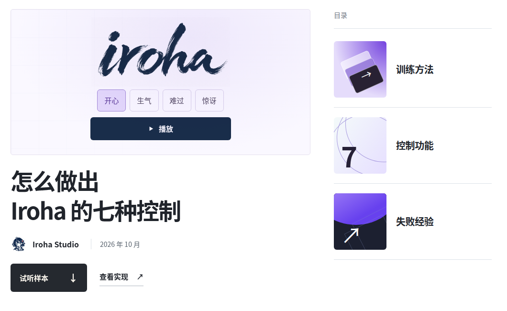
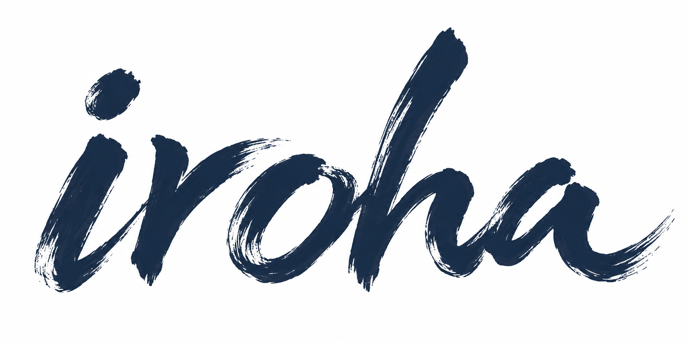

同一句话，四种情绪
试听选自 Iroha-TTS V1 研究博客。不同控制的能力与局限，详见研究说明 ↗。
关于 Iroha Studios
我们开发 Iroha-TTS，研究合成语音中的情感、轻语与声音事件控制。
模型发布在 Hugging Face，训练方法、试听和失败经验整理在研究博客。欢迎在 GitHub 和 Hugging Face 关注后续发布。

Studios试听选自 Iroha-TTS V1 研究博客。不同控制的能力与局限，详见研究说明 ↗。

我们开发 Iroha-TTS，研究合成语音中的情感、轻语与声音事件控制。
模型发布在 Hugging Face，训练方法、试听和失败经验整理在研究博客。欢迎在 GitHub 和 Hugging Face 关注后续发布。